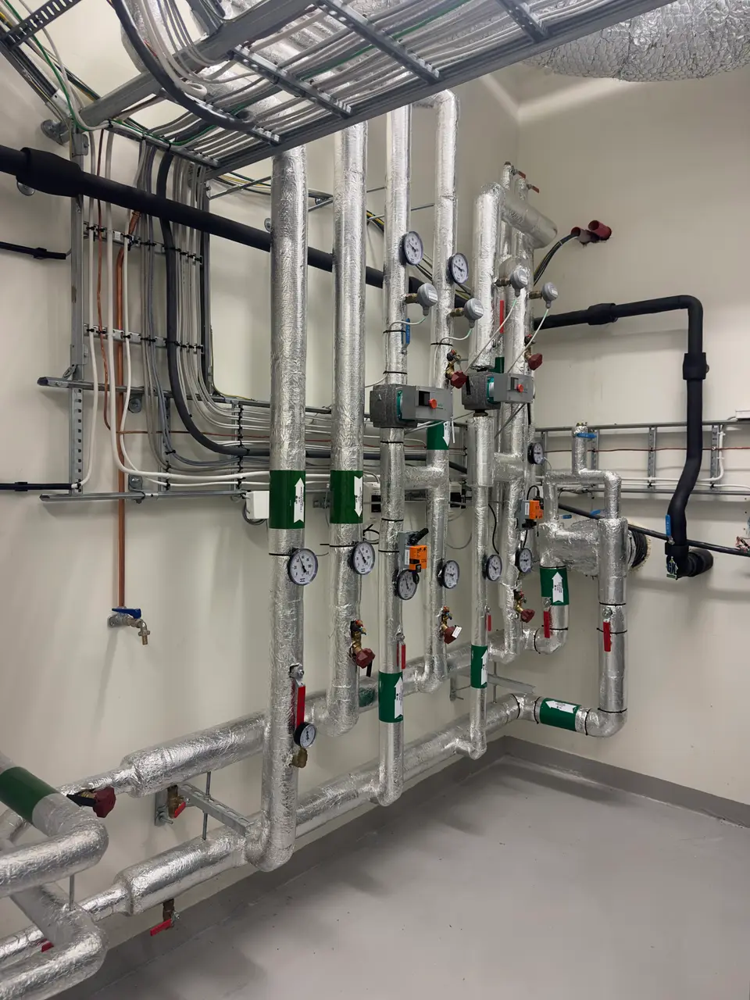
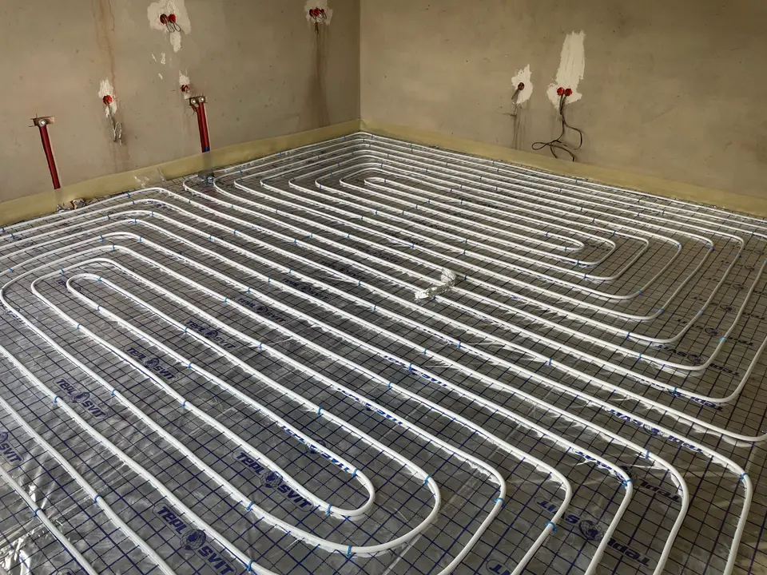
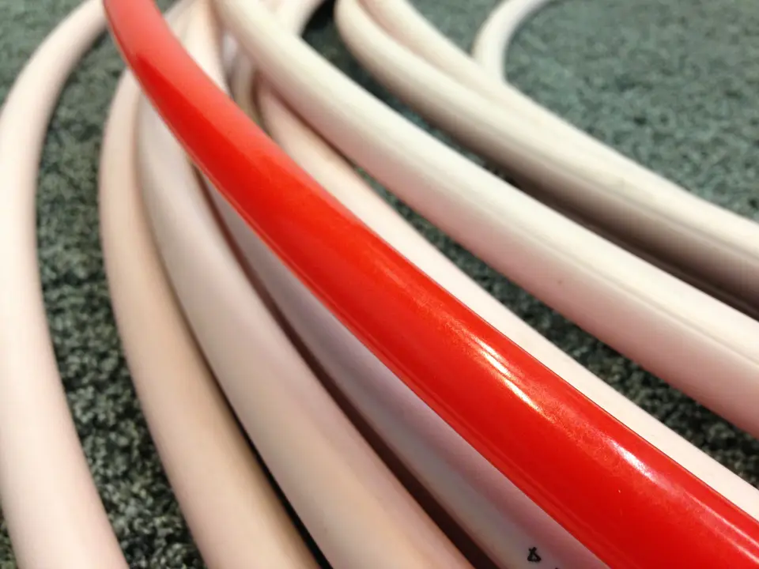
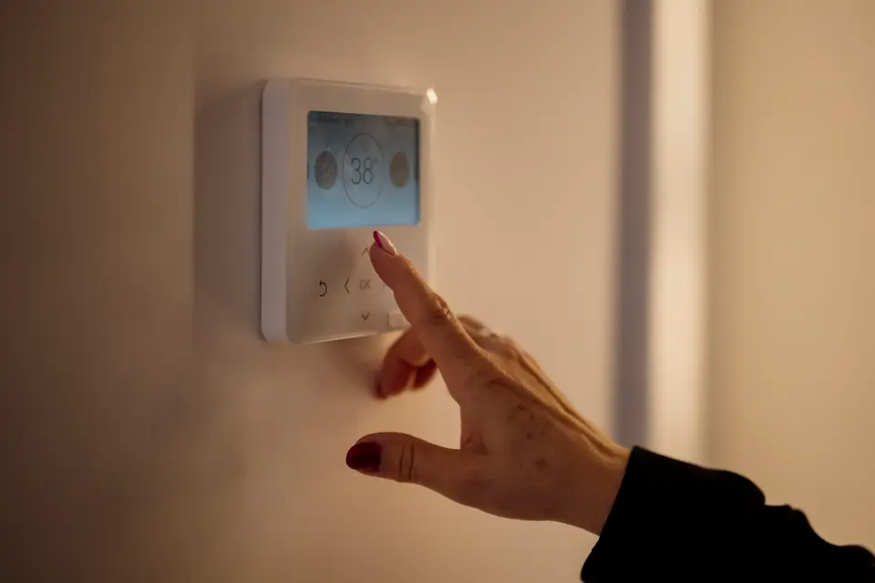

Chaudières gaz à condensation
Pose et remplacement de chaudières murales ou au sol à très haute performance énergétique, raccordement ventouse ou tubage de cheminée.

Installation soignée de chaudières gaz à condensation, pose certifiée de pompes à chaleur air-eau et maintenance de vos circuits hydrauliques dans toute la métropole lilloise.
Assureur fictif, contrat n° DEMO-0001 : chaque chantier est couvert dix ans.
Une entreprise déclarée, établie à Lille, joignable au 04 00 00 00 00.
Un chiffrage écrit après visite, sans surprise ni ligne cachée.
Des solutions thermiques pérennes et conformes aux normes pour votre confort d'hiver.
Pose et remplacement de chaudières murales ou au sol à très haute performance énergétique, raccordement ventouse ou tubage de cheminée.
Dimensionnement thermique précis et raccordement hydraulique de groupes extérieurs avec régulation modulante pour réduire vos dépenses d'énergie.
Pose soignée de radiateurs basse température en fonte d'aluminium et montage de têtes thermostatiques pour un équilibrage thermique pièce par pièce.
Pose de collecteurs régulés, calpinage de tubes PER avec barrière anti-oxygène et mise en épreuve hydrostatique avant coulage de chape.
Nettoyage complet des boues ferreuses et calcaires par circulation d'eau sous pression pulsée avec injection d'inhibiteur anticorrosion protecteur.
Nettoyage du brûleur, analyse de combustion avec mesure de monoxyde de carbone, contrôle du vase d'expansion et remise de l'attestation légale.
Découvrez en images nos raccordements hydrauliques et la propreté de nos chaufferies rénovées.





Nous nous déplaçons rapidement dans toute la métropole lilloise pour vos travaux et dépannages.
Une organisation rigoureuse en 4 étapes pour garantir la fiabilité de vos installations.
Vous présentez les caractéristiques de votre logement et de votre installation de chauffage actuelle.
Nous examinons la faisabilité hydraulique, le réseau d'émetteurs et les conduits d'évacuation des fumées.
Émission d'un devis clair et sans surprise listant les références des appareils certifiés et la main d'œuvre.
Raccordement soigneux, réglage fin des courbes de chauffe et contrôle d'étanchéité sous pression.
Des réponses précises à vos interrogations techniques courantes.
Une première orientation technique est envisageable par téléphone, mais la vérification des organes de sécurité gaz et des composants hydrauliques impose un examen direct sur site afin de garantir une totale sécurité.
La chaudière valorise les vapeurs d'eau issues de la combustion du gaz pour augmenter son rendement global, alors que la pompe à chaleur capte les calories gratuites de l'air ambiant. L'analyse de vos déperditions thermiques guide le bon choix.
L'accumulation d'oxydes métalliques et de boues freine la circulation de l'eau chaude et dégrade le rendement des échangeurs thermiques. Un désembouage régulier rétablit une diffusion homogène de la chaleur dans les radiateurs.
Oui, tous nos chantiers d'installation et de rénovation thermique sont couverts par notre contrat d'assurance décennale souscrit auprès de Assureur fictif sous le numéro DEMO-0001.
Contactez notre équipe pour toute question sur votre chaudière ou votre projet de pompe à chaleur.
+33 4 00 00 00 00
contact@chauffagiste.demo.invalid